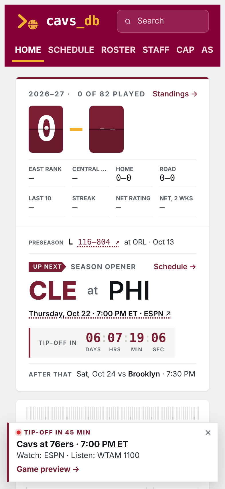
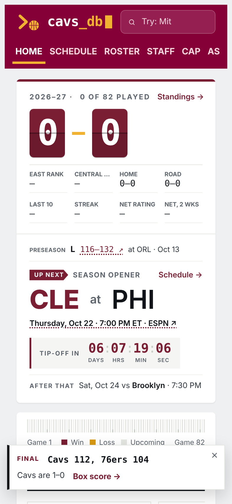
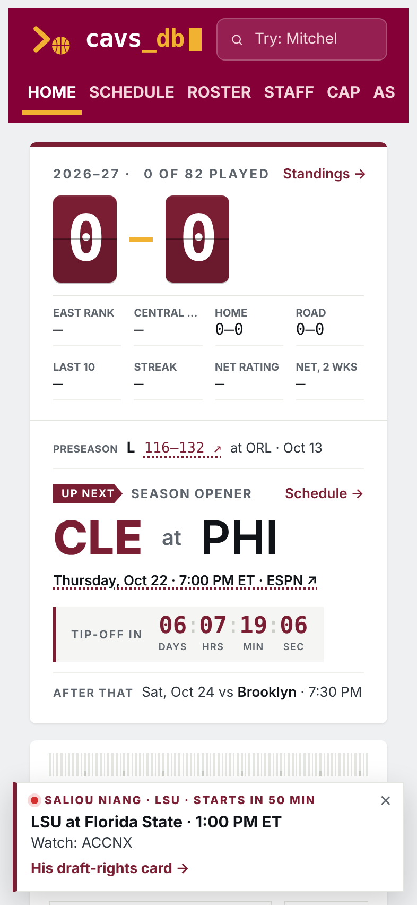
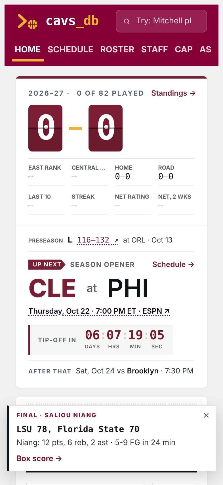

Game alerts
A small card in the bottom corner that shows up only when someone is on the site around game time. Tap × and it stays gone for that game.
1 hour before → tip
After the final
Niang · before
Niang · after
When it shows- Before: from 60 minutes before tip until about an hour into the game. Says where to watch and listen, links to the game preview.
- Final: for 12 hours after the game ends, with the score and a box score link. It appears within about 30 minutes of the final (when the site's update job runs), and pops up on its own if the page is already open.
- Niang: same idea for LSU games once he’s cleared to play, with his stat line after.
- On phones the back-to-top button steps aside while the card is showing.